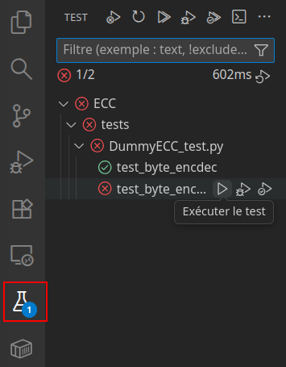

TP1
Dans ce TP nous allons implémenter, pas à pas, les différents ECC vus en cours.
Pour cela vous exécuterez régulièrement des suites de tests afin de vérifier la validité de votre implémentation. VSCode offre une interface permettant d'exécuter les tests du projet ainsi que d'en visualiser les résultats :

💡 L'OO était encore une notion récente pour vous, nous éviterons d'utiliser des classes dans le cadre de ce TP.
Hamming (implémentation naïve)
Création de l'ECC
Exécutez les tests, puis décrivez l'ECC présent dans le fichier : - Créez une copie du fichier que vous nommerez .
- Créez une copie du fichier que vous nommerez .
- Dans ces fichiers, remplacez les occurrences de par .
- Exécutez les tests.
Placer les bits d'informations
- prendra en paramètre le nombre de bits de redondances (à l'exception du dernier).
- Ajoutez le test suivant à
Combien faut-il de bits de redondances (à l'exception du dernier) pour avoir un mot de code de 8 bits ? - Modifiez le paramètre donné à afin d'avoir des mots de codes de 8 bits.
- Utilisez les méthodes et afin de placer les bits de redondances (sans les calculer).
- Exécutez à nouveau les tests.
Calculer et vérifier les bits de redondances
- Créez calculant la parité correspondant au bit de redondance 2i (indice : ).
- Modifiez cette fonction de sorte à ce que corresponde au bit de parité global.
- Ajoutez le test suivant à
- N'hésitez pas à rajouter vos propres valeurs à la suite de tests.
- Modifiez la fonction d'encodage afin de mettre à jour les bits de redondance (après qu'ils aient tous été insérés).
- Lancez une nouvelle fois les tests.
- Modifiez la fonction de décodage afin de calculer le syndrome (un nombre), et d'inverser le bit correspondant.
- Exécutez les fonctions de tests
Hamming (avec des matrices)
La méthode que nous venons d'implémenter correspond à ce qu'un humain ferait s'il devait effectuer les encodage/décodage à la main. Ces opérations sont en réalité équivalentes à des produits matriciels que les ordinateurs sont capables de faire très rapidement grâce à des instructions spéciales. Par exemple il est possible de traiter 256 à 512 bits en ~1 cycle CPU. En comparaison, les conditions/boucles sont beaucoup plus coûteuses pour un ordinateur (~10-20 cycles CPU).
Nous allons donc créer un version plus rapide de Hamming grâce à des produits matriciels avec la bibliothèque numpy.
⚠ Toutes les matrices/vecteurs devront avoir un .
- Créez un nouvel ECC nommé , créez aussi ses tests.
- Réécrivez l'encodage et le décodage de sorte à ce que les bits de redondance soient à la fin (sans les calculer).
- Exécutez les tests
- Créez une fonction créant la matrice C à partir du paramètre n :
- Générez une liste de nombre allant de 0 à 2n-1 inclus.
- Retirez 0 et toutes les puissances de 2 de cette liste.
- Chaque ligne de C correspondra alors à l'encodage binaire de chaque élément de cette liste.
- Créez une fonction créant la matrice G à partir de C :
- Générez la colonne R correspondant au dernier bit de parité :
- G est alors la concaténation horizontale de R avec C.
- Générez la colonne R correspondant au dernier bit de parité :
- Dans la fonction d'encodage, rajoutez les bits de redondances (produit matriciel du mot d'information avec G, % 2).
- Exécutez les tests.
- Créez une fonction créant la matrice G à partir de C :
- H est une concaténation verticale de C, d'une ligne de 0, et d'une matrice identité.
- Dans la fonction de décodage, calculez le syndrome (produit matriciel du mode de code avec H, %2).
- Convertissez le syndrome en nombre, 0 indique une absence d'erreur.
- Créez un tableau de conversion grâce à la fonction suivante :
- Convertissez le nombre à partir de ce tableau de conversion puis inversez le bit correspondant.
- Lancez les tests.
- Ajoutez cet ECC à puis lancez le benchmark.
💡 La méthode avec matrice est plus lente pour des petits . Ceci s'explique par le fait que :
- numpy engendre un surcoût significatif sur les petites matrices.
- on pourrait optimiser d'avantage si les opérations étaient directement faites dans F2.
Pour aller plus loin...
Dans cette partie, nous allons utiliser le scripts qui compare les vitesses d'encodage et de décodage d'ECC en kB/s. Pour cela, il calcule la duré d'encodage (ou de décodage) ainsi que le nombre de bits d'informations ainsi encodé (ou décodé). En cas d'échec du décodage, les bits d'informations sont considérés perdus (et devront donc être re-transmis). Le taux de mots correctement transmis est aussi affiché.
- Dans le fichier , modifiez la probabilité d'erreur sur un bit () pour qu'elle vale 0.1.
Que remarquez-vous alors ? Comment expliquez-vous cela ? - Pour éviter cela, nous allons créer un nouvel ECC .
- prend en paramètre un ECC, ainsi que la taille en bit d'un mot de code.
- Calculez le nombre de mot de code nécessaires pour atteindre n.
- L'encodage consistera alors en :
- séparation du mot d'information en parties égales
- de l'encodage des différentes parties via .
- de la concaténation des résultats.
- Implémentez cet ECC, puis lancez les tests.
- Ajoutez l'ECC au benchmark, puis exécutez-le.
Que remarquez-vous alors ? Comment expliquez-vous cela ?
💡 Nous estimons ici que les erreurs surviennent de manières indépendantes, or ce n'est pas toujours le cas. Pour se prémunir des erreurs consécutives, on peut tout simplement répartir les bits consécutifs dans des mots différents.
Par exemple le bit ira dans le mot .
Par exemple le bit ira dans le mot .